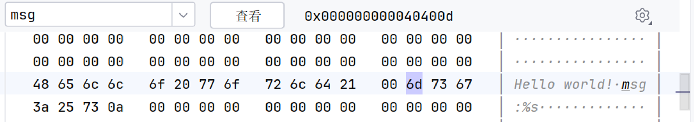
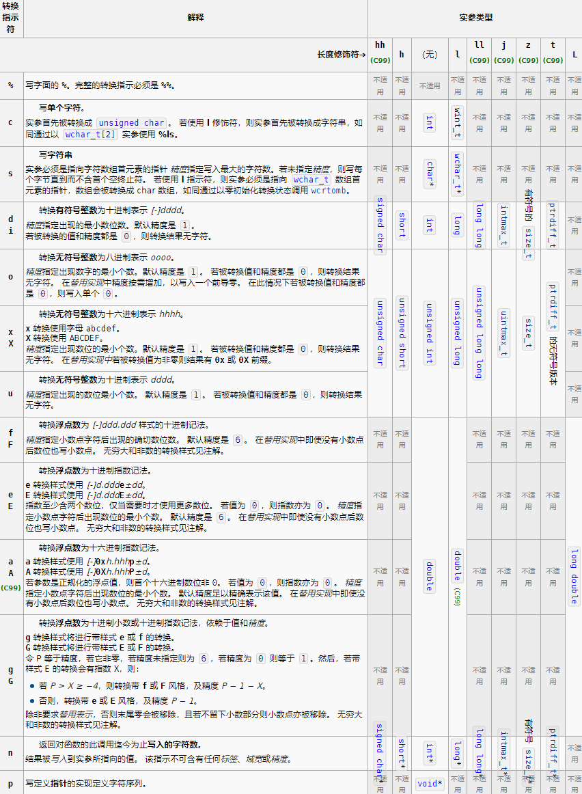

运算符优先级
| 优先级 | 运算符 | 结合律 |
|---|---|---|
| 1 | 后缀运算符：[] () · -> |
从左到右 |
| 2 | 一元运算符：++ -- ! ~ +（正） -（负） * & sizeof 类型转换 |
从右到左 |
| 3 | 乘除法运算符：* / % |
从左到右 |
| 4 | 加减法运算符：+ - |
从左到右 |
| 5 | 移位运算符：<< >> |
从左到右 |
| 6 | 关系运算符：< <= > >= |
从左到右 |
| 7 | 相等运算符：== != |
从左到右 |
| 8 | 位运算符 AND：& |
从左到右 |
| 9 | 位运算符 XOR：^ |
从左到右 |
| 10 | 位运算符 OR：\| |
从左到右 |
| 11 | 逻辑运算符 AND：&& |
从左到右 |
| 12 | 逻辑运算符 OR：\|\| |
从左到右 |
| 13 | 条件运算符：?: |
从右到左 |
| 14 | 赋值运算符：= += -= *= /= %= &= ^= \|= <<= >>= |
从右到左 |
| 15 | 逗号运算符：, |
从左到右 |
数组与指针
字符串
- 以
\0结尾的字符数组
=== "字符串字面量的内存分配" !!! info inline end 编译器会将代码中的字符串字面量，连续地存储在一片只读的内存空间中，于是就有这个情况的发生
```c
#include<stdio.h>
#include<string.h>
int main(){
const char *msg="Hello world!";
printf("msg:%s\n",msg);
msg+=strlen("Hello world!");
msg++;
printf("%s\n",msg);
return 0;
}
//output:
Hello world!
msg:%s
```
=== "内存分布" 
指针数组与数组指针
char *a[]={"Hello","World","I Love U"}
//a是一个存放指针的数组，其中各指针分别指向对应字符串
??? note "int *p[5] 和int (*p)[5]的区别"
c
int *p[5]={p1,p2,p3,p4,p5};
//这是一个指针数组，内有五个指针，各指向int类型
int (*p)[5];
int a[5]={1,2,3,4,5};
p=a;
//括号优先，p是一个单独的指针，指向含有5个int类型的数组
函数指针
- 函数指针能以非成员函数或静态成员函数的地址初始化。由于存在函数到指针的隐式转换，取址运算符可以忽略：
!!! info 任何函数指代器表达式，在用于异于下列语境时
- 作为取址运算符的操作数
- 作为 `sizeof` 的操作数
会经历到指向表达式所指代函数的指针的转换。
```C
int (*f_ptr)(int);
int * f_ptr(int);
//这两个完全不同，一个是指针，一个是函数!!!
```
- 每次尝试对 function 解引用，都会迫使编译器将它转换为函数指针=
=== "E.g.1"
c
function(20);
(function)(20);
(*&function)(20);
(&function)(20); //缺失了 解引用，鉴于 C 标准允许通过函数指针调用函数，编译器对此也没什么意见。
(*function)(20);
(***********function)(20);
//所有值均为20，都是等效的
=== "E.g.2"
c
int function(int arg)
{
return arg;
}
int (*func_ptr)(int);
func_ptr = &function;
func_ptr = function;
//此处function的int (int)类型，隐式转换为int (*)(int)
(*func_ptr)(20); //人畜无害，20
func_ptr(20); //人畜无害，20
(****func_ptr)(20);// 隐式转换3次
(&func_ptr)(20);//Error
!!! note "解析"
此处将(&func_ptr)(20)挑出来解析，不妨理解成：
```c
int (*func_ptr)(int) = &function; // 这是之前的
int (**second_ptr)(int) = &func_ptr; // 这是我们正在做的
second_ptr(20); // 我们想这样
```
在这里，second_ptr 已经是个二级指针了。函数到函数指针（它是个一级指针）的转换过程中，地址值是不会改变的，就是这个函数的可执行代码所在的位置。问题在于，二级指针的值不是 function 的地址，而是 func_ptr 这个变量的地址。
=== "E.g.3 另外隐式转换的情况" ```c int function(int arg) { return arg; } int func_two(int a, int f(int arg)) { return 3 * f(a); }
int a = 1;
int b = func_two(a, function);
```
!!! note
**`func_two` 的两个参数类型分别是 `int` 和 `int (int)`，但是调用时却传入了一个函数指针**
这里又发生了隐式转换 **:**
- 不过需要**注意发生隐式转换的位置**。`func_two` 的**第二个形参实际上是 `int (*)(int)` ，而非字面上的 `int (int)`**。**这就和 `void f(int a[])` 实际上是 `void f(int *a)` 一样**，同样是出于节约资源的考虑。也就是说，编译器眼中的 `func_two` 是 `int func_two(int a, int (*f)(int)`。
=== "E.g.4 与typedef结合"
c
typedef int F (int a);
F g, h;
int (*p[])(int) ={g, h}; //p是一个函数指针数组
int q(F* array[]);
```c title="typedef与数组和函数结合时"
typedef int INT_ARRAY_100[100];
INT_ARRAY_100 arr;
//等价于 int arr[100];
typedef int *(*PFun)(int,char*);
PFun a[5];
// 等价于int*(*a[5])(int,char*);
```
其他注意项
&只能对变量取地址,地址的大小取决于编译器和运行系统位数 地址是一个无符号整数，它表示内存中的一个字节。指针是一个变量，其存储了一个地址。由于这个原因，所有指针类型的大小都是相同的。-
指针的本身的加减，是对地址进行一个类型对应字节长的变化
c int a[10]={1,2,3,4,5,6,7,8,9,0}; int *p=&i; p -> a[0]; (p+1) -> a[1] p=0x---1c; p+1=0x---20; -
malloc搭配free，free要在申请内存的首地址
c int *p; p=(int*)malloc(n*sizeof (int)); free(p); -
字符串定义时的差异:
c char *s1="Hello,World!" ; //此处s1指向一个存放于代码区的”Hello，World！“，其地址极小且只读 char s2[]="Hello,World!" ; /*此处s2是一个字符数组，存放“Hello，World！”的单元和'\0'，是一个处于高地址的可修改数组*/ -
常见错误：指针未初始化
c char *string; scanf("%s",string); //局部变量string 随机指向某个地方，进行scanf操作时不一定出错，但若指向的内存会导致有害则程序崩溃 -
二维数组初始化时第二个[ ]须有确切大小
c char a[][]={"Hello",} // Error -
指针作差是对应类型的个数差,不同类型指针不能做差
c int s[]={1,2,3,4,5,6}; int *p1,*p2; p1=&s[0],p2=&s[4]; p1-p2=4 //而不是4*4=16 -
char类型数组未初始化部分的默认值取决于它是在哪里定义的。如果它是在全局或静态区域定义的，那么它的默认值是空字符，即 ‘\0’。如果它是在局部区域定义的，那么它的默认值是不确定的，可能是随机的垃圾值。
c char s[10]={65,0,97}; //里面对应的元素就是ASCII码了，所以这里的0等价于'\0' char s[10]="Happy" 等价于char s[10]={"Happy"} 等价于char s[10]={'H','a','p','p','y'}等价于 char s[10]={'H','a','p','p','y','\0'}int类型数组未初始化部分的默认值取决于它是在哪里定义的。如果它是在全局或静态区域定义的，那么它的默认值是0。如果它是在局部区域定义的，那么它的默认值是不确定的，可能是随机的垃圾值。
-
传入函数中的数组是个指针，所以此时
sizeof (a)就只会得到pointer所占的大小(32位操作系统中，指针的大小是4字节；64位操作系统中，指针的大小是8个字节)，而不是像主函数中是一整个数组的大小。 -
以
main函数为例，其有两种（标准规定的）形式：c int main(void); // 类型为 int(void)int main(int argc, char *argv[]); // 类型为 int(int, char *[]) //argc 是读入的命令数量； //argv[]是将命令作为字符串存入数组中 ,则argv[0]就是运行程序时的代码; -
悬垂指针(dangling pointer) 在这里
pfi称为悬垂指针（dangling pointer），它指向了一个已经被销毁的对象。使用悬垂指针是未定义行为，可能会导致程序崩溃。c int *dangling() { int i = 0xdeadbeef; int *p = &i; return p; } int main() { int *pfi = dangling(); MAGIC(pfi); MAGIC(*pfi); }- 值得注意的是：
c char *get_a_string() { char str[] = "Hello world!"; return str; } int main() { char *str = get_a_string(); printf("%s\n", str); } //什么也不会输出 //str 作为一个数组，其生命周期在 get_a_string 函数返回时结束。- 存储期:
- 静态存储期（static） 在程序开始时创建，在程序结束时销毁。如全局变量和静态变量。
- 自动存储期（automatic） 在程序进入作用域时创建，在程序离开作用域时销毁。如局部变量。
- 动态分配存储期（allocated） 在程序显式地分配内存时创建，在程序显式地释放内存时销毁。如 malloc() 分配的内存。
- 二级指针不可指向普通（非指针）变量
- *与++**的碰撞
c int a[]={1,2,3,4,5,6}; int *p=a; int **pp=&p; printf("%d",*(p++)); //1 printf("%d",**pp); //2
数据类型
隐式转换
!!! note "隐式转换的类型"
下列算术运算符的实参会经历隐式转换，以获得公共实数类型，这是执行计算所用的类型：
二元算术 * / % + -
关系运算符 < > <= >= == !=
二元逐位算术 & ^ |
条件运算符 ?:
- char/short会被int转换，int会被float/double转换，float会被double转换
-
小于
int类型的变量传给printf时会转成int,float会被转成double
但scanf不会，且输入时需要用对应的规范化输入符号 -
int类型的值在使用%f输出时，会导致未定义行为。这是因为%f要求的参数是double类型的，占用8个字节，而int类型的参数只占用4个字节。printf函数会从内存中读取8个字节的数据，然后按照浮点数的存储格式来解析，这样就会得到错误的结果。(这种转换方式，不同于数据类型间的直接转换->标准的补码或者IEEE表示)
内存大小
=== "int,short,char" int占4个字节，short占2个字节，char占1个字节； ```c short s[][5]={301,302,303,304,305,306,307,308,309,0}; sizeof s=225=20 //初始化为s[2][5] short占2个字节，故答案为20 strlen((char )s)=18 / char 强制转换会在二进制下一个字节一个字节的转换， 而strlen会在读到'\0' 即 00000000 此处301 是 00000001 00101101 即转成45([0])和1([1]) 两个元素 同理 后面的各元素直至0之前都不会出现 00000000，所以strlen就是29=18 */
short a[]={300,177,0};
strlen((char *)a)=3; //因为177 是 00000000 10110001 在第四个元素时出现0
int b[]={216,5446,65464,0};
strlen((char *)b)=1; // 216 是00000000 00000000 00000000 11011000
```
=== "结构体" 结构体的大小是其成员大小的总和，加上对齐所需的填充字节 ```c struct point { char a; long long b; char c; double d; } struct point p; /此时占用整整32个字节，因为对齐的缘故，longlong/double是八位，不会与char 紧挨而是腾挪出7个字节，再占用8个字节/
struct point {
char a;
char c;
long long b;
double d;
}
struct point p;//此时占用的就是24个字节，2+6+8+8
```
=== "联合体"
!!! note
联合体的大小是其中占用内存的最大的类型的大小，它可以在同一个内存空间中存储不同类型的数据，但是每次只能使用其中一个成员。联合体的优点是节省了内存空间，可以根据不同的情况使用不同的数据类型。联合体的缺点是不能同时使用多个成员，而且可能会造成数据的混乱或损坏。
c
union Data {
int i;
float f;
char str[20];
};
union Data data;
data.i = 10;
data.f = 3.14;
strcpy(data.str, "Hello"); // (1)
1. 要访问联合体的成员，可以使用成员访问运算符（.）或者指针运算符（->）。
所以，上面的代码最后只能得到 data.str 的值，而 data.i 和 data.f 的值会被破坏。
如果要保留各个成员的值，可以使用不同的联合体变量，或者在同一时间只使用一个成员。
I/O与文件
C的输入输出模型
缓冲
!!! info 广义的缓冲区是内存空间的一部分，在内存中预留了一定的存储空间，用来暂时保存输入和输出等 I/O 操作的一些数据，这些预留的空间就叫做缓冲区；而 buffer 缓冲区和 Cache 缓存区都属于缓冲区的一种。 (buffer 缓冲区存储速度不同步的设备或者优先级不同的设备之间的传输数据，比如键盘、鼠标等；此外，buffer 一般是用在写入磁盘的； Cache 缓存区是位于 CPU 和主内存之间的容量较小但速度很快的存储器，Cache 保存着 CPU 刚用过的数据或循环使用的数据；Cache 缓存区的运用一般是在 I/O 的请求上)
- 完全缓冲：仅缓冲区填满时刷新缓冲区（将内容发送至目的地），通常用于文件输入。缓冲区的大小取决于系统，常见大小为 512bits 和 4096bits。
- 行缓冲：出现换行符时刷新缓冲区，通常用于键盘输入。所以在按下Enter 键后程序才能使用用户输入的字符。
stdin,stdout,stderr的缓冲类型: Unix 约定stdin与stdout若与终端关联则为行缓冲，而stderr为无缓冲(输入一个字符即刻被读取，无法使用退格等进行修改) > 为什么需要缓冲区： > 1. 系统层面，减少 CPU 对磁盘的读写次数：CPU 读取磁盘中的数据并不是直接读取磁盘，而是先将磁盘的内容读入到内存，也就是 Cache，然后 CPU 对 Cache 进行读取，进而操作数据；计算机对 Cache 的操作时间远远小于对磁盘的操作时间，大大的加快了运行速度，提高 CPU 的使用效率。 > 2. 在 C 语言输入中，把若干字符作为一个块进行传输比逐个发送这些字符节省时间，打错字符可以直接通过键盘修正错误。 - C 标准规定：输入是缓冲的。
流
- 流就是一系列连续的字节。 打开文件的过程就是把流与文件相关联，读写都通过流来完成。
标准流
#define stdin /* 由实现定义 */
#define stdout /* 由实现定义 */
#define stderr /* 由实现定义 */
字符输入输出
重定向
-
改变标准输入输出的目的地
在 UNIX 系统中，可以使用
>和<来重定向输入输出。例如，
ls > ls.txt将ls的输出重定向到ls.txt文件中，cat < ls.txt将ls.txt文件的内容输入重定向到cat命令中。重定向的目的地可以是文件，也可以是其他程序。
例如，
ls | cat将ls的输出重定向到cat命令中。
无格式输入/输出
- 窄字符无格式输入输出函数，定义于
<stdio.h>头文件中：
| 功能 | 函数 | 失败返回值 |
|---|---|---|
int getchar(void) |
||
int getc(FILE *stream) |
||
int fgetc(FILE *stream) |
单字符输入 | EOF |
char *fgets(char *s, int size, FILE *stream) |
||
char *gets_s( char *str, rsize_t n) |
字符串输入 | NULL |
int ungetc(int c, FILE *stream) |
放回文件流 | EOF |
int putchar(int c) |
||
int putc(int c, FILE *stream) |
||
int fputc(int c, FILE *stream) |
单字符输出 | EOF |
int puts(const char *s) |
||
int fputs(const char *s, FILE *stream) |
字符串输出 | EOF |
- 以上函数都将字符从缓冲区中的
unsigned char类型转换为int类型。
格式化输入/输出
scanf
- 常用
scanf("%[^\n]",s)以读取含空格字符串 但同时要注意，紧接着读取%c会读取到\n！！！
printf
printf(%[flags][width][.prec][hIL]type)
| char | meaning |
|---|---|
- |
左对齐（右侧填充空白） |
+ |
总是打印符号（包括正号） |
| `` | 如果无符号，打印空格 |
0 |
用 0 填充 |
| width/.prec | meaning | |
|---|---|---|
| number. | 总和的最小字符数 | |
| * | 以一个额外的int类型变量指定宽度 | |
| .number | 小数点后位数 | |
| .* | 同理,但是指定小数点位数 |

文件编码与文件输入输出
- 定义：
简单的说，文件是在硬盘上的一段已命名的储存区。
对操作系统而言，文件更加复杂。文件是具有符号名的，在逻辑上具有完整意义的一组相关信息项的序列。文件还包括了一些额外数据，便于操作系统确定文件的种类。
对于 C 语言来说，C 把文件看作连续的字节，每个字节都能被单独读取。这与 UNIX 环境中的文件结构相对应。便于其他操作系统，C 提供两种文件模式：文本模式和二进制模式。 - 缓冲文件系统
- 输出数据：
数据—>缓冲区，装满缓冲区后—>磁盘文件
读入数据：
先一次性从磁盘文件将一批数据输入到缓冲区，然后再从缓冲区逐个读入数据
- 输出数据：
-
类型与宏
FILEc FILE*(const char *restrict path,const char *restrict mode); int fclose(FILE* stream); fscanf(FILE*,...); fprintf(FILE*,...);
函数
FILE *fopen(const char *filename, const char *mode)-
打开文件，返回文件流指针。 打开失败，返回
NULLr 打开只读(文件不存在则出错) r+ 打开读写，从文件头开始 w 打开只写。如果不存在则新建，如果存在则清空（会清空原文件） w+ 打开读写。如果不存在则新建，如果存在则清空 a 打开追加。如果不存在则新建，如果存在则从文件尾开始 ..x 只新建，如果文件已存在则不能打开
-
int fclose(FILE *stream)- 关闭文件，清空流（清空流就是传递缓冲数据，将缓冲区数据写入磁盘扇区），释放缓冲和FILE结构体 返回0：正常关闭 ；非0：无法正常关闭
-
int feof(FILE *stream)检测文件流是否到末尾： 未到达则返回 0 ；到达则返回非 0 值
void rewind (FILE *stream)
将文件指针指向读写文件的首地址，即打开文件时指针所指向的位置
-
int fseek(FILE *stream,long offset,int orgin)- offset:移动偏移量，long型
-
origin：
文件首部 0 SEEK_SET 当前位置 1 SEEK_CUR 文件尾部 2 SEEK_END - 成功时返回0，否则非0
-
long ftell(FILE *stream)
返回当前文件指针的位置，即相对于文件开头的位移量（字节数） 出错时返回 -1L
int ferror(FILE *stream)
检测给定流是否存在错误 发生错误时返回非0；否则为0
常用读写函数
=== "字符读写函数"
int fgetc(FILE *stream)
**将获取的`unsigned char`转换为`int`返回
失败时返回`EOF`**
-----
**`int fputc(int ch,FILE *stream)`
将获取的字符`ch`，写入到`fp`指示的磁盘空间
成功时返回`ch`；失败时返回`EOF`**
=== "字符串读写函数"
char *fgets(char *str,int count,FILE *stream)
**最多读取 *n-1* 个字符，并将读入的字符串存入s所指内存地址开始的n-1的连续的内存单元
到达指定字符数 或 接收到换行符 或接收到EOF时自动在末尾添加 ’\0’ (会保留换行符)
成功执行：返回 `*str` ;否则返回`NULL`**
---
**`int fputs(const char *str,FILE *stream)`
结束符 ’\0’ 不会写入文件
执行成功返回最后写的一个字符；失败返回 EOF**
=== "数据块读写函数"
size_t fread(void *buffer,size_t size,size_t count,FILE *stream)
- **buffer :存储读取对象的指针**
- **size :每个对象的大小**
- **count :要读取的对象数**
- **返回值：成功读取的对象数**；如果 `size` 或 `count`为0，则返回0且不执行任何操作
---
**`size_t fwrite(void *buffer,size_t size,size_t count,FILE *stream)`**
其他
int fflush(FILE *stream)- 立即写入（要求上一次操作是输出）。
FILE *freopen(const char *filename, const char *mode, FILE *stream)void setbuf(FILE *stream, char *buf)- 定义流 stream 应如何缓冲。该函数应在与流 stream 相关的文件被打开时，且还未发生任何输入或输出操作之前被调用一次
int setvbuf(FILE *stream, char *buf, int mode, size_t size)- 创建供标准 I/O 函数替换使用的缓冲区
打开文件的标准操作
- 注意FILE指针是最后一个参数，返回的是成功读写的字节数
=== "文本文件"
c FILE* fp=fopen("file","r"); if (fp){ fscanf(fp,...); //第一项FILE *,后面和scanf用法一样 fclose(fp); } else{ ... } exit(0)//关闭所有打开的文件并终止程序进行，参数0表示正常结束，非0参数表示不正常结束
=== "二进制文件"
c
size_t fread(void *restrict ptr,size_t size,size_t nitems,FILE *restrict stream);
size_t fwrite(const void *restrict ptr,size_t size,size_t nitems,FILE *restrict stream);
头文件
-
声明 extern 全局变量，函数原型
c title="max.h" int max(int a,int b); extern int allvalue;-
有关声明和定义
1.变量的定义：变量的定义用于为变量分配存储空间，还可以为变量指定初始值。在一个程序中，变量有且仅有一个定义。
2.变量的声明：用于向程序表明变量的类型和名字。程序中变量可以声明多次，但只能定义一次。
extern int i；//声明但不定义
int i;//声明也定义
extern声明不是定义，也不分配存储空间。事实上，它只是说明变量定义在程序的其他地方。
注意：如果声明有初始化式，那么它可被当作是定义，此时声明也是定义了，即使声明标记为extern
-
-
标准头文件结构
```c
ifndef LIST_HEAD
define LIST_HEAD
typedef struct node{ int value; struct node* next; }node;
endif
```
简要C标准库
c.type
| 字符分类 | 功能 |
|---|---|
在标头 <ctype.h> 定义 |
|
isalnum |
检查一个字符是否是字母或数字(函数) |
isalpha |
检查一个字符是否是字母(函数) |
islower |
检查一个字符是否是小写字母(函数) |
isupper |
检查一个字符是否是大写字母(函数) |
isdigit |
检查字符是否为数字(函数) |
isxdigit |
检查一个字符是否是十六进制的字符(函数) |
iscntrl |
检查一个字符是否是控制字符(函数) |
isgraph |
检查一个字符是否是图形字符(函数) |
isspace |
检查一个字符是否是空白字符(函数) |
isblank(C99) |
检查一个字符是否是空格字符(函数) |
isprint |
检查一个字符是否是可打印字符(函数) |
ispunct |
检查一个字符是否是标点字符(函数) |
| 字符操作 | |
tolower |
将字符转换成小写(函数) |
toupper |
将字符转换成大写 |
!!! note "区别 isblank 和 isspace"
**空格**字符：`isblank` 仅判断空格 和水平制表符 `\t`。
**空白**字符：`isspace` 判断空格 、水平制表符 `\t`、换行符 `\n`、回车符 `\r`、换页符 `\f`、垂直制表符 `\v`。
math.h
c title="常用函数"
double acos(double x);
double asin(double x);
double atan(double x);
double cos(double x);
double sin(double x);
double tan(double x);
double exp(double x);
double log(double x);
double log10(double x);
double pow(double x, double y);
double sqrt(double x);
double ceil(double x);
double floor(double x);
double fabs(double x);
- 输入输出全都是
double类型（注意隐式类型转换带来的影响）。 - 三角函数均为弧度制。
- 没有
PI这个宏。- 可以使用
atan(1)*4代替。 - GCC 定义了一些数值宏，它们都以
M_开头，比如M_PI。它们默认为double类型。如果你需要其他精度，可以添加l后缀，比如M_PIl。
- 可以使用
string.h
-
类型
size_t -
宏
NULL -
函数
-
复制函数
c void *memcpy(void *dest, const void *src, size_t n); void *memmove(void *dest, const void *src, size_t n); char *strcpy(char *dest, const char *src); char *strncpy(char *dest, const char *src, size_t n); -
连接函数
c char *strcat(char *dest, const char *src); char *strncat(char *dest, const char *src, size_t n); -
比较函数
c int memcmp(const void *s1, const void *s2, size_t n); int strcmp(const char *s1, const char *s2); int strncmp(const char *s1, const char *s2, size_t n); -
查找函数
c void *memchr(const void *s, int c, size_t n); char *strchr(const char *s, int c); // size_t strcspn(const char *s1, const char *s2); // char *strpbrk(const char *s1, const char *s2); // char *strrchr(const char *s, int c); // size_t strspn(const char *s1, const char *s2); char *strstr(const char *s1, const char *s2); // char *strtok(char *s1, const char *s2); -
其他函数
c void *memset(void *s, int c, size_t n); // char *strerror(int errnum); size_t strlen(const char *s);
使用前，自己计算字符串长度和剩余空间，这是编程者的责任。或者使用带
n的函数。有些函数可能返回空指针，记得测试返回的指针。
-
stdlib.h
- 宏
RAND_MAXEXIT_FAILUREEXIT_SUCCESS
函数
-
伪随机序列产生函数
c int rand(void); void srand(unsigned int seed); -
整数算术函数
c int abs(int n); div_t div(int numer, int denom); long labs(long n); ldiv_t ldiv(long numer, long denom); -
查找和排序函数
c void *bsearch(const void *key, const void *base, size_t n, size_t size, int (*compar)(const void *, const void *)); void qsort(void *base, size_t n, size_t size, int (*compar)(const void *, const void *)); -
文本转换（好用的）
c double atof(const char *str); int atoi(const char *str); //返回字符串对应的十进制整数 long atol(const char *str); double strtod(const char *str, char **endptr); long strtol(const char *str, char **endptr, int base); //指定起末和进制 unsigned long strtoul(const char *str, char **endptr, int base); -
内存管理（重难点）
c void *calloc(size_t nobj, size_t size); void free(void *ptr); void *malloc(size_t size); void *realloc(void *ptr, size_t size);
函数的使用
!!! note "qsort 的用例："
```c
int cmpfunc (const void * a, const void * b) {
return ( *(int*)a - *(int*)b );
}
qsort(values, 5, sizeof(int), cmpfunc);
```
stdio.h
-
类型
c size_t FILE fpos_t -
宏
c stderr stdin stdout NULL EOF SEEK_CUR SEEK_END SEEK_SET // BUFSIZ // FOPEN_MAX // FILENAME_MAX -
函数
-
文件操作函数（不做要求）
c // int remove(const char *filename); // int rename(const char *old, const char *new); // FILE *tmpfile(void); -
文件访问函数
c int fclose(FILE *stream); // int fflush(FILE *stream); FILE *fopen(const char *filename, const char *mode); FILE *freopen(const char *filename, const char *mode, FILE *stream); // void setbuf(FILE *stream, char *buf); // int setvbuf(FILE *stream, char *buf, int mode, size_t size); -
格式化的输入输出函数
c int fprintf(FILE *stream, const char *format, ...); int fscanf(FILE *stream, const char *format, ...); int printf(const char *format, ...); int scanf(const char *format, ...); int sprintf(char *str, const char *format, ...); int sscanf(const char *str, const char *format, ...); // int vfprintf(FILE *stream, const char *format, va_list arg); -
字符输入输出函数
c // int fgetc(FILE *stream); // char *fgets(char *str, int n, FILE *stream); // int fputc(int c, FILE *stream); int fputs(const char *str, FILE *stream); // int getc(FILE *stream); int getchar(void); // char *gets(char *str); // int putc(int c, FILE *stream); int putchar(int c); int puts(const char *str); // int ungetc(int c, FILE *stream); -
直接输入输出函数（考试不管）
c size_t fread(void *ptr, size_t size, size_t nobj, FILE *stream); size_t fwrite(const void *ptr, size_t size, size_t nobj, FILE *stream); -
文件定位函数（考试不管）
c //int fgetpos(FILE *stream, fpos_t *pos); int fseek(FILE *stream, long offset, int origin); //int fsetpos(FILE *stream, const fpos_t *pos); long ftell(FILE *stream); void rewind(FILE *stream); -
错误处理函数（不做要求）
c // void clearerr(FILE *stream); // int feof(FILE *stream); // int ferror(FILE *stream); // void perror(const char *str);
-
易错
-
sizeof是运算符（表达式） 且为静态c sizeof(type)sizeof expression sizeof(a++) //a值不变,编译时判断了类型就替换了a++，并没有实际执行任何的计算 -
scanf:%c要读’ ’和’\n’```c int a; char c1, c2; char s[7]; scanf("%d%c %c%s\n", &a, &c1, &c2, s); printf("%d#%c#%c#%s", a, c1, c2, s);
#input: there is no space after the la st character 20231127 ckc-agc daily_problem
/output: 20231127# #c#kc-agc / ```
-
函数中的
malloc:```c
include
include
include
void my_strcat(char s1, char s2, char *s3) { size_t len1 = strlen(s1); size_t len2 = strlen(s2); s3 = malloc(len1 + len2 + 1); memcpy(s3, s1, len1); memcpy(s3 + len1, s2, len2); s3[len1 + len2] = 0; printf("%s\n", s3); }
int main() { char s1[] = "I love "; char s2[] = "cats!"; char s3[] = ""; my_strcat(s1, s2, s3); printf("%s\n", s3); } //结果：I love cats!\n\n
`` !!! note "解释" - 该函数my_strcat应该将结果连接 s1 并 s2 存储在 s3 中。但是，该函数无法按预期工作。 - 问题出在s3 = malloc(len1 + len2 + 1);上 - 该函数my_strcat将参数作为 s3 参数，该参数是指向char数组的指针。 - 调用函数时， s3 将复制到函数的局部变量 s3 中。因此，该malloc函数为局部变量分配内存，而不是 中main` 的原始 s3 变量 s3 。 - 函数返回后，为局部变量 s3 分配的内存不被使用，因此是内存泄漏。原来的 s3 in main 没有被修改，所以它仍然是一个空字符串。类似地，传入function中的
array实际上是个pointer；```c //On a 64-bit machine, the output of the following code fragment is __. void print_soyo(char soyo[]) { printf("%lu\n", sizeof(soyo)); }
int main() { char soyo[] = "Soyosan\0Love"; print_soyo(soyo); return 0; } //output:8 //因为soyo作为一个parameter是pointer，在64-bit machine上为8 byte; ```
-
宏函数,并没有“返回值”
```c
define f(a,b,x) a*x+b
printf("%d,%d\n", f(1,2,3), f(f(1,2,3),4,2)); / 中间没有空格 / //output:5,11 //11=13+22+4 ```
-
C标准规定转义序列最多由3个八进制数字组成
c char a[]="\000"; // {'\0','\0'} char b[]="\0000";// {'\0','0','\0'} char c[]="\101" //{'A','\0'} char d[]="\1011" //{'A'.'1','\0'} -
注意
++的的返回值！！！```c
include
int main(void) { int x[5] = { 2, 4, 6, 8, 10 }, p, *pp;
p = x; pp = &p; printf("%d ", *(p++)); /* 数字后有一个空格 */ printf("%d\n", **pp); return 0;} //output:2 4
const char st[] = {"Hello", "world", "!"}, *p = st;
p++; printf("%s-%c\n", p, p); (p)++; printf("%s-%c-%c\n", p, p, (*p)+1); //output: world-w orld-o-p ```